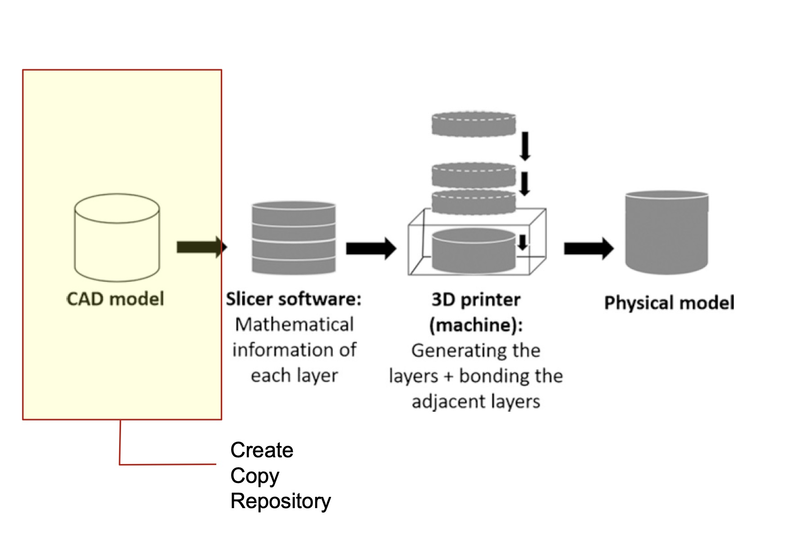
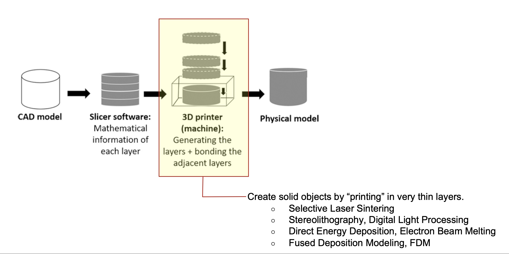
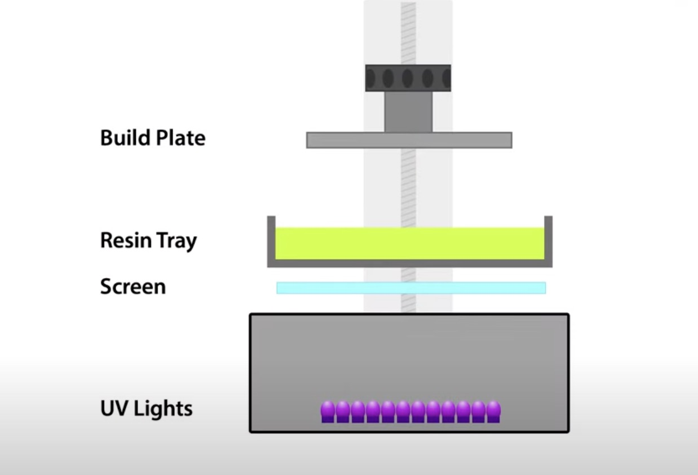

3D Printing is an innovative fabrication method with disruptive potential from the family of additive manufacturing methods, in which a 3-dimensional, physical object is built from a CAD (computer-aided design) model or a digital 3D model.
Additive manufacturing: The process of fabrication through adding material layer by layer and bonding the adjacent layers, based on a digital model. This fabrication method has the advantage of generating considerably lower amounts of waste in comparison with subtractive and formative manufacturing, therefore yielding more sustainable results. Other typical additive manufacturing techniques apart from 3D Printing are fused layer modeling (melt material in a print head and “paint”), selective laser sintering and stereolithography (solidify fluid using light).

CAD: computer-aided design; the use of computers to aid in the creation, modification, analysis or optimization of a design.
This is a visual overview of the steps that have to be made for an object designed digitally in a 3 dimensional format (with the help of a CAD software) to be turned into a physical artifact.


This is the content for Subchapter 3.
A. FDM (Fused Deposition Modeling) 3D Printing
"Fused Deposition Modeling," abbreviated as FDM, translates to "melted layer construction"in a loose sense. FDM is one of the oldest and simplest 3D printing technologies. FDM-produced parts are characterized by a distinct layered structure. "Fused Deposition Modeling"is a registered trademark that has established itself in the market.

The 3D model of a component is loaded into a "Slicing Software” (see more about Slicing in Chapter 3). In this program, the machine code is generated. The component is divided into layers of 0.1-0.3 mm thickness. The toolpath of the print head is then automatically generated. The print head "draws" the outer contour of the component and fills in the areas that should be solid. The software creates a file that includes the toolpath of the print head and other information, such as the required melting temperature of the material. The finalized code is sent to the 3D printer.
A plastic wire, known as filament, is fed into the print head as the printing material. The filament (see more about filaments in Chapter 5) is heated to the preset melting temperature, causing it to become viscous. This precise temperature control ensures that the applied material does not flow away and hardens within seconds of application. The viscous material is pushed through the print head by the incoming material. This process is precisely calibrated to the motion of the print head,ensuring an even material line is laid down. This continues until the layer is complete. Then,the print head moves upward by the set layer thickness and repeats the process with the data for the next layer. This creates the typical layer-by-layer structure characteristic of 3D printing.

B. Resin 3D Printing
Resin 3D Printing is a type of additive manufacturing technology that uses liquid resins to create highly accurate and detailed objects. It’s a popular additive manufacturing technique for producing complex parts and components with extraordinary detail. This 3D printing type is also known as vat photopolymerization: the process uses short wavelength light to solidify liquid resin into 3D pieces.
In most resin 3D printers, the process starts with a build platform filled with liquid resin. The 3D printer then emits light to create each object layer. As the light passes through the vat and curing layer, it solidifies or cures the liquid resin into solid pieces. This process continues until all layers have been printed.

What are resin 3D Printers mostly used for?
Resin 3D printing has various applications including prototyping, tooling, and production parts. It offers superior mechanical properties, high accuracy, resolution, and faster turnaround times compared to other 3D printing technologies.
How expensive are resin 3D Printers?
Resin 3D printing does require specialized equipment and materials to be used. The total cost depends on the type of resin and printer used and the complexity of the printed parts.While resin-based printers are typically more expensive up front than FDM 3D printers, they almost always provide more value to professional users. Vat polymerization delivers better part quality, smoother finishes and finer detail, greater throughput, and build chamber utilization (especially mSLA 3D printers).

Resin 3D printers have excellent resolution, far superior to other 3D printing processes like fused deposition modeling (FDM) 3D printers. For applications like rapid prototyping or molding, resolution can mean the difference in a successful end product or design review.
